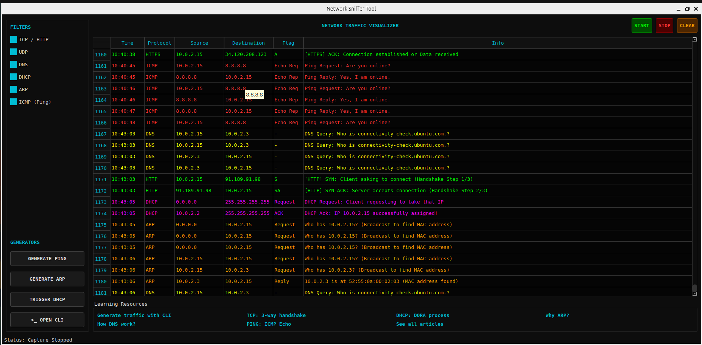

A desktop-based educational tool designed to help students understand real-time protocol message exchanges and transactions through simplified visualization and interactive learning. Built specifically to bridge the gap between networking theory and actual network behavior.

Networking students often struggle to connect theoretical protocol concepts with real packet-level behavior. Existing professional tools:
As a result, students memorize protocols — instead of understanding them.
Protocol Visualizer is a desktop application developed specifically for networking students. It simplifies protocol message exchanges and visually represents transactions in a way that aligns with academic learning objectives.
Instead of drowning in raw packet data, students can:
Purpose-built to transform passive packet inspection into interactive protocol exploration.
Clearly displays protocol transactions and communication sequences between entities, helping students understand message flow logic.
Focuses only on relevant protocol fields and behaviors instead of overwhelming raw packet structures.
Quickly filter specific protocol messages to analyze targeted communication patterns with ease.
Interact with protocol simulations through an integrated command-line environment to enhance hands-on learning.
Trigger protocol actions using interactive buttons to observe real-time behavior and response generation.
Integrated access to protocol documentation and learning resources for extended academic support.
From raw data to visual understanding in three seamless steps.
The application captures real-time network traffic within an Ubuntu virtual machine environment.
Captured packets are processed and filtered to extract meaningful protocol-level interactions.
Structured protocol transactions are presented in a simplified format. Students can then interact with simulations dynamically.
Protocol Visualizer is tailor-made for educational settings:
Senior Lecturer, Faculty of Technology, USJ
kuruwita@sjp.ac.lk
Lecturer, Faculty of Technology, USJ
chamara.lekamalage@gmail.com
Network Technology
ict21881@fot.sjp.ac.lk
Network Technology
ict21841@fot.sjp.ac.lk
Network Technology
ict21818@fot.sjp.ac.lk